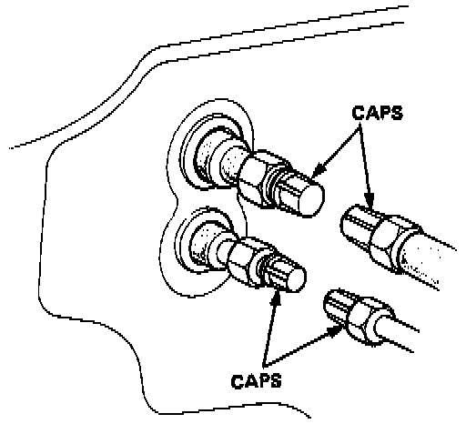
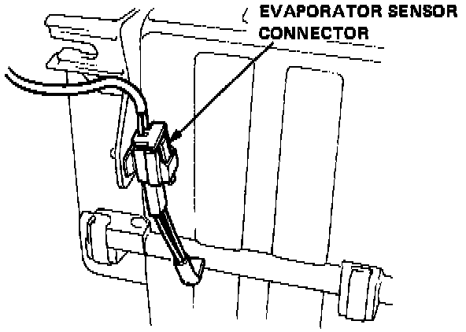
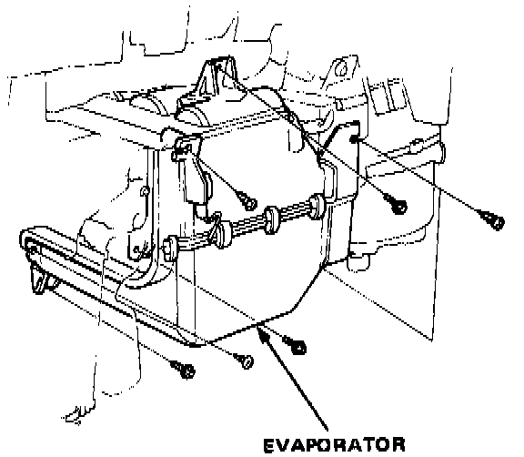
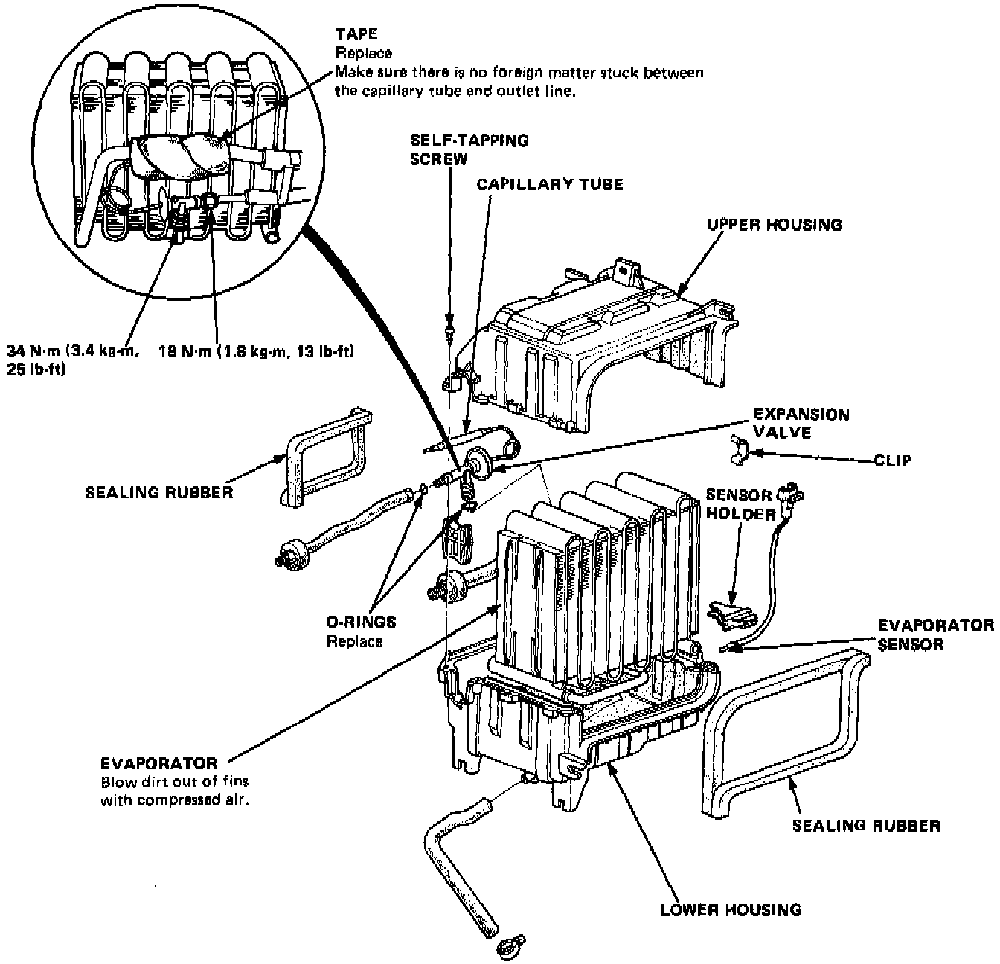

Evaporator Core: Service and Repair
Evaporator Unit Replacement1. Disconnect the battery negative terminal.
2 Recover the refrigerant.

3. Disconnect the receiver line and suction hose from the evaporator.
CAUTION: Cap the open fittings immediately to keep moisture out of the system.
4. Remove the 5 screws, then remove the glove box lower cover and glove box.
5. Remove the 4 screws, then remove the glove box frame and side duct.

6. Disconnect the wire harness from the evaporator sensor connector.

7. Remove the 4 tapping screws and 3 mounting bolts.
8. Pull the evaporator away from the body.
9. Install in the reverse order of removal, and:
- Apply a sealant to the grommets.
- Make sure that there is no air leakage.
10. Charge the system and test performance.

Evaporator Unit Disassembly
1. Pull out the evaporator sensor from the evaporator fins.
2. Remove the tapping screws and clips from the housing.
3. Carefully separate the housings and remove the evaporator covers.
4. Remove the expansion valve if necessary.
Assemble the evaporator in the reverse order of disassembly, and:
- Install the expansion valve capillary tube against the suction line, and wrap it with tape.
- Reassemble the upper and lower housings with clips, making sure there are no gaps between them.
- Reinstall the evaporator sensor in its original location.